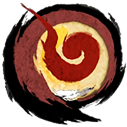

EL EQUIPO DE DESARROLLO ERA PEQUEÑO
El equipo de desarrollo de Okami estaba compuesto por alrededor de 30 personas, lo que es relativamente pequeño para un juego de su escala.
INSPIRACIÓN EN LA ARQUITECTURA JAPONESA
El juego se inspira en la arquitectura japonesa tradicional, con edificios y estructuras que reflejan la estética y la filosofía de la cultura japonesa.
CURIOSIDADES Y DATOS INTERESANTES
LA MÚSICA FUE COMPUESTA POR VARIOS ARTISTAS
La banda sonora de Okami fue compuesta por varios artistas, incluyendo a Masami Ueda, Akari Kaida y Hiroshi Ikeuchi, lo que le dio un toque único y emotivo al juego.
EL JUEGO FUE DISEÑADO PARA SER JUGADO DE MANERA RELAJADA
El director del juego, Hideki Kamiya, ha dicho que Okami fue diseñado para ser jugado de manera relajada, sin la necesidad de tiempos de carga o interrupciones.
HAY UN CÓDIGO SECRETO PARA DESBLOQUEAR UN FINAL ALTERNATIVO
En Okami, hay un código secreto que permite desbloquear un final alternativo, que cambia la forma en que termina la historia.
EL JUEGO TIENE UN SISTEMA DE “BRILLO DE SOL”
El juego tiene un sistema de “Brillo de Sol” que permite a Amaterasu absorber la luz del sol para restaurar su energía.
LA RELACIÓN ENTRE AMATERASU E ISSUN ES CENTRAL
La relación entre Amaterasu y su compañero de viaje, Issun, es central en la historia del juego, y se desarrolla a lo largo de la aventura.
EL JUEGO TIENE UN ENFOQUE EN LA EXPLORACIÓN
Okami tiene un enfoque en la exploración, permitiendo a los jugadores descubrir nuevos lugares y secretos en el mundo del juego.
OKAMI HA TENIDO COLABORACIONES CON OTROS JUEGOS
- Bayonetta: Amaterasu aparece como un traje alternativo para Bayonetta.
- Monster Hunter Rise: Amaterasu inspira una armadura especial para el Palamute llamada “Ammy”.